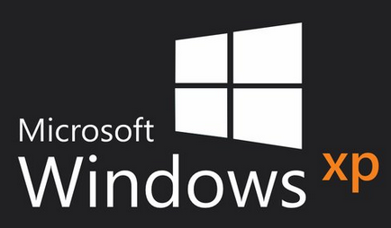
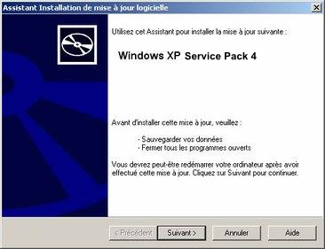

31 mars 2014
Sortie de Windows XP SP4

Microsoft décide de faire marche arrière et viens d'annoncer aujourd'hui un 4ème Service Pack pour Windows XP. Le support devait s'arrêter le 8 avril 2014, mais à la demande de beaucoup (administrations, banques et écoles) Microsoft a préparé un ultime Service Pack pour étendre ce support jusqu'à début 2016. Que contient ce Service Pack ? La bonne nouvelle, c'est qu'il intègre Internet Explorer 11, la dernière version du navigateur phare. Mais ce Service Pack propose aussi tous les correctifs qui sont sortis depuis le SP3. Un autre ajout intéressant est le mode Ready8 © qui permet de savoir si vous êtes prêt à migrer sur Windows 8.1. En effet ce mode permet d'activer l'interface
Et n'oubliez pas de posséder un anti-virus à jour comme par exemple Norton ou McAfee. Que pensez-vous de cette stratégie à deux vitesses opérée par Microsoft ?Source : Microsoft
Commentaires 6